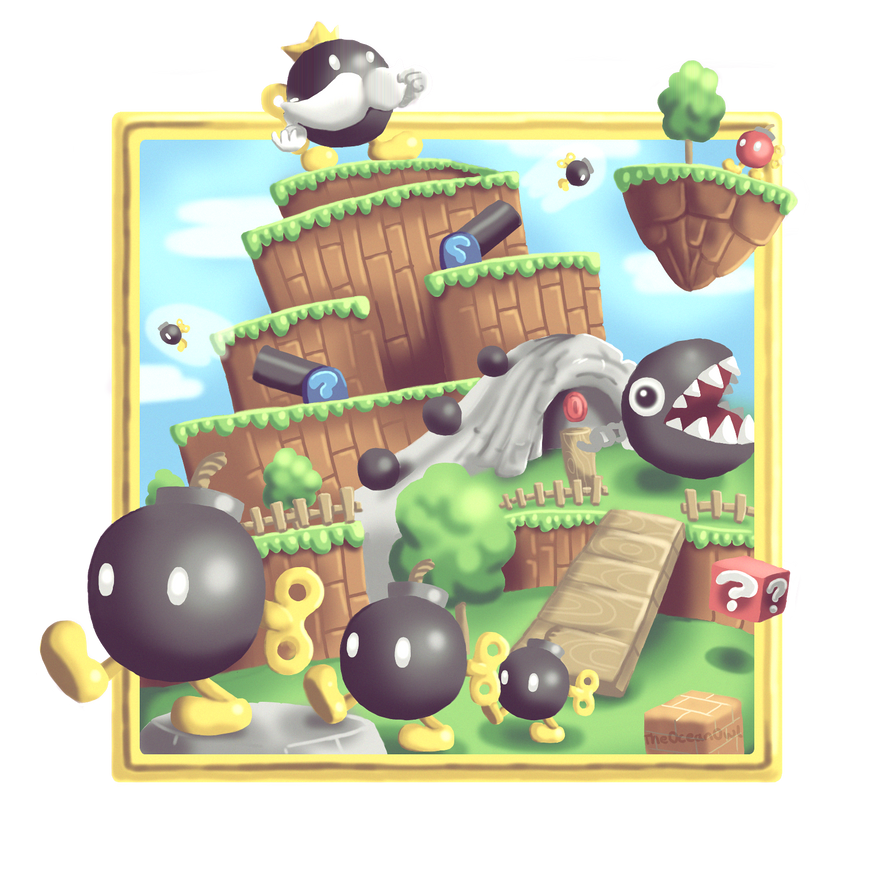
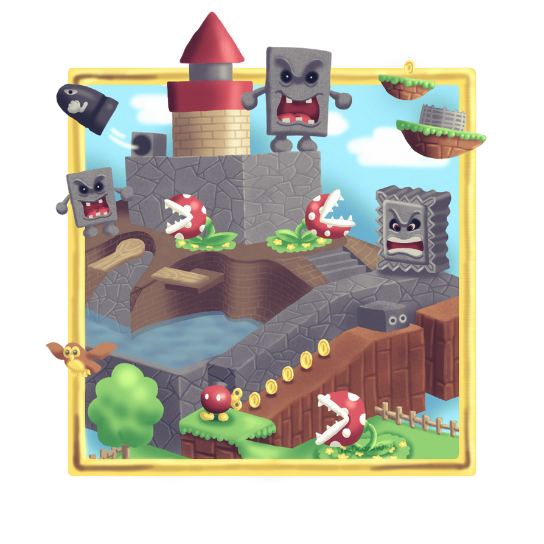

Stage 1: Bob-omb Battlefield  Big Bob-omb on the Summit
to get the first star you need to Run all the way up the mountain
and defeat King Bob-omb. How? Grab him at
his back and throw him 3 times!!
for mmore detailes check this
Video.
if you got this star click here!
Stage 1: Bob-omb Battlefield Footrace with Koopa the Quick
to get the secound star you need to Race with Giant Koopa - the big turtle,
all the way up to the top of the mountain.
for mmore detailes check this
Video.
if you got this star click here!
Stage 1: Bob-omb Battlefield Shoot to the Island in the Sky
Shoot Mario to the floating island and Mario will find the star in the yellow ! box.
for mmore detailes check this
Video.
if you got this star click here!
Stage 2: Whomp's Fortress  Chip off Whomp's Block
To get the first star in this stage you need to defeat the big Whomp at
the top of the whole fortress. Pound on his back 3 times when he falls down.
for mmore detailes check this
Video.
if you got this star click here!
Stage 2: Whomp's Fortress To the Top of the Fortress
To get the secound star in this stage you need to Go to the top of the tower,
which is at the top of the whole fortress.
for mmore detailes check this
Video.
if you got this star click here!
Stage 2: Whomp's Fortress Shoot into the Wild Blue
To get the third star in this stage you need to Talk to Red Bob-omb who is
near the pool to release the cannon. Shot Mario to the platform under the pole to take the star.
for mmore detailes check this
Video.
if you got this star click here!